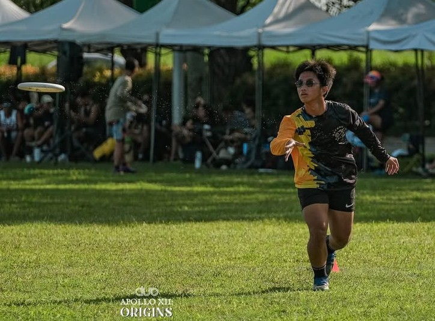

Featured Photo
^ Me playing Ultimate Frisbee
Previous Projects
- Designed and developed some ideas for website designs
- Developed a discord bot for the purpose of studying
- Conducted a research on how discord bots could potentially affect productivity
Skills
- Programming Languages (Java, Python, C, JS, SQL)
- Hard-working
- Communication Skills
- Flexible
- Adaptable
- Teamwork
- Critical Thinking
- Athletic (above average)
Autobiography
My name is Nestor Victus T. Bulatao III, but I usually go by Nevi. I have always been passionate about Ultimate. I was born and raised in San Fernando, Pampanga. I went to highschool at Philippine Science High School - Central Luzon Campus, where I developed an interest in Computer Science Over the years, I have honed my skills both in computer science and sports, leading me to pursue computer science in College.
My goal is to finish my program of BS Computer Science in college, and then pursue another degree in BS Kinesiology after establish financial stability.
When I'm not working, I enjoy playing Ultimate, strengthening my body, and running. I believe in continuous growth and always seek opportunities to improve and inspire others.